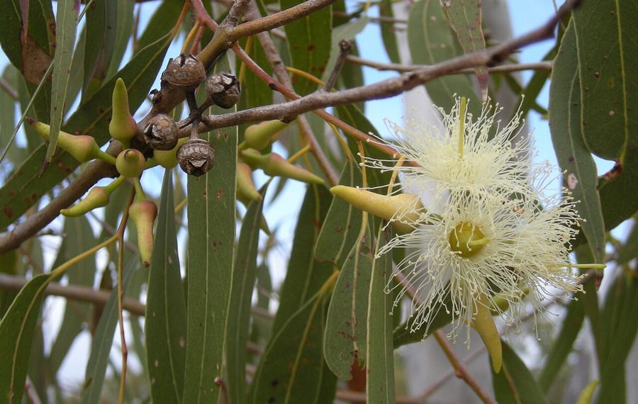

सफेदाEucalyptus
Eucalyptus tereticornis · Myrtaceae · FLR-0125

- Scientific name
- Eucalyptus tereticornis Sm.
- Family
- Myrtaceae
- Hindi
- सफेदा
- Local names
- safeda, safed, eucalyptus, yukeliptus, nilgiri
- Status here
- cultivated
- Movement
- Resident, here all year
- IUCN
- not evaluated
- Review
- audited and independently read
When to look कब देखें
Present all year.
Uses and possibilities उपयोग और संभावनाएँ
Drawn from the documented uses in the profile below, where each is labelled traditional, current or a research lead. All uses →
Tell it apart from इनसे अलग पहचानें
सफेदा / Eucalyptus
Eucalyptus tereticornis Sm. — Myrtaceae
सफेदा — आस्ट्रेलिया से लाया गया पेड़, जो भारत में तेज़ी से फैल गया। पूर्वी उत्तर प्रदेश के हर गाँव में इसके सीधे, सफेद-भूरे तने दिखाई देते हैं। लकड़ी हल्की, तेज़ी से बढ़ती है, और जलाने में अच्छी होती है। पत्तियों से सुगंधित तेल निकलता है। हालांकि यह पेड़ तेज़ी से बढ़ता है, लेकिन यह स्थानीय जलवायु और मिट्टी को प्रभावित करता है।
Quick Identification त्वरित पहचान
| Feature | Description |
|---|---|
| Size | Tall evergreen tree, 20–40 m, fast-growing |
| Bark | Distinctive: white-grey, peeling in strips, smooth below |
| Leaves | Alternate, narrow lanceolate, blue-grey, 10–15 cm, aromatic when crushed |
| Flowers | Creamy-white, in loose clusters, stamens prominent |
| Fruit | Woody capsules (gum nuts), 8–12 mm, opening at the top |
| The test | Crush a leaf; the eucalyptus aroma is unmistakable |
Field tip: Any tall, straight tree with peeling white-grey bark, narrow blue-grey leaves, and a strong aromatic smell when the leaves are crushed is eucalyptus. It is planted everywhere in UP.
हिंदी — कैसे पहचानें: सफेद-भूरी छिलकी वाली छाल, सीधा तना, नीले-हरे पत्ते, तेल की खुशबू।
Morphology आकारिकी
Biometrics:
| Measurement | Range |
|---|---|
| Height | 20–40 m |
| Trunk diameter | 60–120 cm (at maturity) |
| Leaf length | 10–15 cm |
| Leaf width | 1–2 cm |
| Flower cluster diameter | 3–4 cm |
| Fruit diameter | 8–12 mm |
Trunk and bark: Straight, cylindrical, with white, grey or yellowish bark that peels off in irregular strips. Wood pale yellow, light, moderately hard.
Leaves: Alternate, linear-lanceolate, aromatic, containing essential oils.
Flowers: Small, creamy-white, in clusters; stamens numerous, exsert.
Fruits: Woody capsules opening at the apex to release numerous tiny seeds.
हिंदी: सफेद-भूरी छाल जो फटती है, सीधा तना, नीले-हरे पत्ते, सुगंधी तेल।
Behaviour & Ecology व्यवहार और पारिस्थितिकी
A fast-growing, exotic tree from Australia, introduced to India in the mid-19th century. It grows rapidly in most soils and climates, tolerates drought, and is widely planted as a timber and fuel plantation tree. The essential oils in the leaves inhibit the growth of understory vegetation, and the tree is a strong competitor for soil moisture. Ecologically, it provides little benefit to native wildlife; few insects or birds depend on it.
हिंदी: विदेशी पेड़, तेज़ी से बढ़ता है, कम पानी चाहता है, स्थानीय पेड़ों के विकास में बाधा।
Life Cycle / Phenology जीवन चक्र
| Month / season | Event |
|---|---|
| Year-round | Evergreen; sporadic flowering |
| Lifespan | 50–70 years |
Associated Species / Interactions संबंधित प्रजातियाँ
- Limited: Few native insects or birds depend on eucalyptus.
Pests and Diseases कीट और रोग
- Generally pest-free.
Agricultural / Human Relevance कृषि प्रासंगिकता
Uses:
- Timber. Light wood used for packing boxes, poles, and light construction.
- Fuel. A major source of firewood and charcoal; grows quickly for biomass.
- Essential oil. Oil distilled from leaves used in pharmaceuticals and disinfectants.
Today. Widely planted in woodlots and roadside avenues; a major source of income for small farmers.
Research direction (a lead, not a result). The ecological impact of eucalyptus plantations on groundwater and understory vegetation in eastern UP deserves study.
हिंदी: लकड़ी हल्की, तेल निकलता है, जलाने के लिए। किसानों की आय का स्रोत। मिट्टी और पानी पर असर।
Expected Locally स्थानीय रूप से अपेक्षित
Not a field record. Written from published accounts for eastern Uttar Pradesh. No confirmed local sighting yet — if you have seen it, that is what the atlas needs.
अभी तक स्थानीय पुष्टि नहीं। यह विवरण प्रकाशित स्रोतों से है, किसी अवलोकन से नहीं।
Everywhere in Basti and Ayodhya districts — in woodlots, along roadsides, in village settings.
Distribution वितरण
Global range: Native to Australia; introduced throughout the tropics and subtropics.
In India: Widespread cultivation; naturalized in some areas.
In Uttar Pradesh: Ubiquitous.
In Basti district / eastern UP: Common in all settings.
Research Questions शोध प्रश्न
Anyone can investigate these | कोई भी इन प्रश्नों की जाँच कर सकता है
- How fast does a eucalyptus grow in your soil? — Plant a seedling and measure height monthly.
- How much firewood does one tree yield? — Harvest and weigh.
- What insects visit the flowers? — Watch a flowering tree.
- Does eucalyptus grow affect groundwater? — Compare water levels with and without plantations.
- Is the essential oil still distilled locally? — Ask.
Similar Species मिलती-जुलती प्रजातियाँ
| Species | How to tell apart | हिंदी |
|---|---|---|
| Shisham (Dalbergia sissoo) | Leaves compound, smaller; not aromatic; fruit a single dry pod | कटी-फटी पत्तियाँ, एक फली |
| Casuarina (Casuarina equisetifolia) | Tiny leaves on jointed green stems; no aromatic oil | जोड़ों वाली हरी डालियाँ |
Field rule: A tall, straight tree with peeling white-grey bark, blue-grey lance-shaped leaves, and a powerful eucalyptus odour when crushed is eucalyptus.
Taxonomy & Classification वर्गीकरण
Original description. Described by James Edward Smith in 1795 in Specimen of the Botany of New Holland. The epithet tereticornis means "round-horned" in Latin.
Subspecies. Variable; several subspecies recognized in Australia.
Family and order placement. Myrtaceae, order Myrtales. Eucalyptus is a large genus native to Australia with over 700 species.
Phylogenetic notes. Within Myrtaceae, Eucalyptus tereticornis is grouped with the red gums.
IUCN status rationale. Not evaluated; invasive in some regions.
Photo Gallery फोटो गैलरी
Photos needed आवश्यक फोटो
- [ ] Whole tree (पूरा पेड़)
- [ ] Peeling bark close-up (छाल)
- [ ] Flowering branch (फूल)
References संदर्भ
- Smith, J.E. (1795). Specimen of the Botany of New Holland. London. [original description]
- Boland, D.J. et al. (1984). Forest Trees of Australia, 4th ed. Nelson, Melbourne.
- Tasissa, D. & Burkhart, H.E. (1998). An ecophysiological model of loblolly pine growth and water use. Forest Ecology and Management 105(1): 159–175.
- GBIF Occurrence Data — Eucalyptus tereticornis, India (2026).
Source file: species/flora/trees/eucalyptus.md